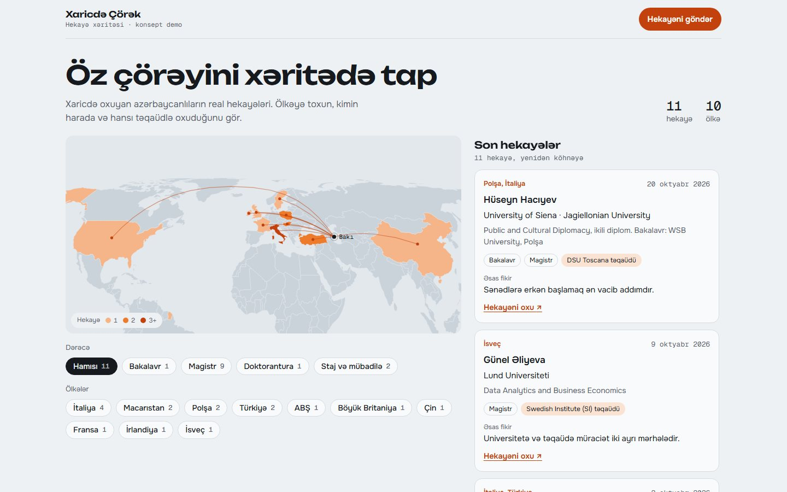

Azerbaijan State Oil and Industry UniversityAzərbaycan Dövlət Neft və Sənaye Universiteti
Bachelor of Information Securityİnformasiya təhlükəsizliyi, bakalavr
AI content & automation · BakuAI kontent və avtomatlaşdırma · Bakı
I make animated ads entirely in code, from the script and voice-over to the final MP4. I also build small AI tools that remove routine work. Animasiyalı reklamları tam kodla hazırlayıram: ssenaridən və səsləndirmədən son MP4-ə qədər. Rutin işi aradan qaldıran kiçik AI alətləri də qururam.
Information security student who ships AI-built content and tools.AI ilə kontent və alətlər hazırlayan informasiya təhlükəsizliyi tələbəsi.
Bachelor of Information Securityİnformasiya təhlükəsizliyi, bakalavr
Customer-oriented product presentation and product management.Məhsulun müştəri yönümlü təqdimatı və məhsul idarəetməsi.
Configuration and security of network systems.Şəbəkə sistemlərinin konfiqurasiyası və təhlükəsizliyi.
Worked in the M10 app sales team over several periods.Bir neçə dövr ərzində M10 tətbiqinin satış komandasında çalışmışam.
Remote buying and selling: dropshipping, gold, silver and share certificates.Uzaqdan alqı-satqı: dropshipping, qızıl, gümüş və səhm sertifikatları.
Upper-intermediateOrta səviyyədən yuxarı
Every frame below is drawn by code, not filmed or generated by a video model. Videos play muted; turn on sound for the voice-over. Aşağıdakı hər kadr kodla çəkilib, çəkiliş və ya video modeli yoxdur. Videolar səssiz oynayır; səsləndirməni eşitmək üçün səsi açın.
A 15-second tour reel. A plane draws its route across a dark map while the camera pushes into the Balkans, Belgrade bursts open, then three hotel tiers count up to their prices. 15 saniyəlik tur reklamı. Təyyarə tünd xəritə üzərində marşrutunu çəkir, kamera Balkanlara yaxınlaşır, Belqrad "partlayır", sonra üç otel kateqoriyası qiymətlərinə qədər sayılır.
A reel built on one idea: blowing out the candles. The mascot blows out the cake candles in the intro, then blows on each product's old price until it falls and the new price lands. Bir ideya üzərində qurulub: şamları üfürmək. Maskot girişdə tortun şamlarını söndürür, sonra hər məhsulun köhnə qiymətini üfürür, qiymət düşür və yenisi gəlir.
A longer campaign reel with the same mascot: an energetic opener, a product spotlight with feature callouts, and a closing offer of 18 months with no interest. Eyni maskotla daha uzun kampaniya reklamı: enerjili giriş, xüsusiyyətləri ilə məhsul təqdimatı və sonda 18 ay faizsiz təklif.
A 20-second reel for a maker of decorative facade elements. A map of Absheron zooms into the Old City, a stone carving opens from the pin, then a CNC gantry cuts the same pattern into foam and the details snap onto a Baku facade. Dekorativ fasad elementləri istehsalçısı üçün 20 saniyəlik reklam. Abşeron xəritəsi İçərişəhərə yaxınlaşır, nöqtədən daş oyma açılır, sonra CNC robotu eyni naxışı penoplastda oyur və detallar Bakı binasının fasadına oturur.
A 74-second explainer for goat-milk baby formula. A goat mascot introduces each stage of the range, with lip-sync driven by the voice-over and subtitles timed to every word. Keçi südü əsaslı uşaq qidası üçün 74 saniyəlik izah videosu. Keçi maskot məhsulların hər mərhələsini təqdim edir; dodaq hərəkəti səsləndirməyə, altyazılar isə hər sözə uyğun vaxtlanıb.
The same four steps behind every video above.Yuxarıdakı hər videonun arxasındakı eyni dörd addım.
Product, prices and brand assets gathered from the real campaign page and logo files.Məhsul, qiymət və brend materialları real kampaniya səhifəsindən və loqo fayllarından toplanır.
Second-by-second script, then Azerbaijani voice-over, music and sound effects in ElevenLabs.Saniyə-saniyə ssenari, sonra ElevenLabs-da azərbaycanca səsləndirmə, musiqi və effektlər.
One HTML file draws every frame from time alone, so any second can be previewed instantly.Bir HTML faylı hər kadrı yalnız zamana görə çəkir, ona görə istənilən saniyəyə dərhal baxmaq olur.
A headless browser captures each frame; FFmpeg encodes the MP4 with the mixed audio.Brauzer hər kadrı çəkir; FFmpeg MP4-ü qarışdırılmış səslə birlikdə yığır.
Web pages built on real content and designed for the phone first.Real məzmun üzərində qurulan və əvvəlcə telefon üçün dizayn edilən veb səhifələr.

A concept page for Xaricdə Çörək, an Azerbaijani study-abroad community. Tap a country to read the stories of Azerbaijani students there: university, scholarship and one key takeaway, each linked to the original post. Xaricdə Çörək üçün konsept səhifə. Ölkəyə toxunursan, orada oxuyan azərbaycanlıların hekayələri açılır: universitet, təqaüd və əsas fikir, hər biri orijinal posta linklə.
Smaller builds that use AI to take repetitive work off people's hands.AI ilə təkrarlanan işi insanların üzərindən götürən kiçik layihələr.
A web app for uploading PDF and DOCX files. It extracts the text and uses the Claude API to rewrite it in simpler language.PDF və DOCX faylları yükləmək üçün veb tətbiq. Mətni çıxarır və Claude API ilə daha sadə dilə çevirir.
Translates whole .docx and .pdf files through the Azure Translator API.Bütöv .docx və .pdf fayllarını Azure Translator API ilə tərcümə edir.
Sorts the Downloads folder into Images, PDF, Videos, Music, Documents, Archives and Programs. Shows a preview first, skips unfinished downloads, and can undo the last run.Downloads qovluğunu Şəkillər, PDF, Videolar, Musiqi, Sənədlər, Arxivlər və Proqramlar üzrə sıralayır. Əvvəl önizləmə göstərir, yarımçıq yükləmələrə toxunmur, son sıralamanı geri qaytara bilir.
Claude Code agents with their own instructions: one writes ad scripts and renders animations, another runs daily market analysis. Connected to Gmail, Google Drive, Telegram, Figma and Canva over MCP.Öz təlimatları olan Claude Code agentləri: biri reklam ssenarisi yazır və animasiya render edir, digəri gündəlik bazar analizi aparır. MCP ilə Gmail, Google Drive, Telegram, Figma və Canva-ya qoşulub.
Send the product and the deadline. I reply with a plan and a first draft.Məhsulu və son tarixi göndərin. Plan və ilk variantla cavab verirəm.